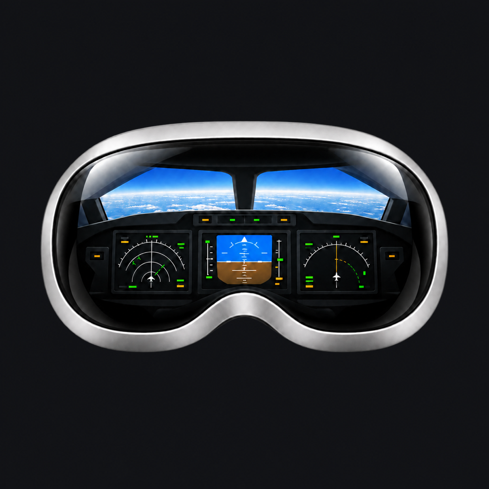

Outside View
Mac includes an optional virtual ultrawide monitor. Windows shares the simulator window through H.264 up to 1440p/30, with an optional experimental foveated curved sender. Windows does not install a virtual-monitor driver.

XPPanelsVR CompanionAPPLE VISION PRO · MAC OR WINDOWS COMPANION
For your headset: download the latest XPPanelsVR 2.0 from the App Store.
Connect your X-Plane instruments and ultrawide outside view
to the cockpit in your headset.
Companion 2.0 · Windows 11 x64 · macOS 15+
Vision Pro connects over Wi-Fi. Simulator and headset app purchased separately.
Using Meta Quest? Visit the Quest companion page.
THE COMPUTER SIDE OF YOUR COCKPIT
Keep X-Plane on your Mac or Windows PC. The matching Companion brings its displays to XPPanelsVR on Vision Pro.
Mac includes an optional virtual ultrawide monitor. Windows shares the simulator window through H.264 up to 1440p/30, with an optional experimental foveated curved sender. Windows does not install a virtual-monitor driver.
Stream PFDs, NDs, ECAMs, both MCDU LCDs and ISIS from detached sources. Mac guides opening/sizing/placement; Windows provides guided preparation/reset for all nine displays and ISCS, source mapping and recovery.
Choose your simulator folder and explicitly install its bundled command plugin. Windows owns XPPanelsVisionProBridge; Mac retains XPPanelsBridge. Managed previous versions are backed up before replacement.
Choose the installer for the computer running X-Plane. The Windows package includes its own Python runtime, media bridge, simulator plugin and experimental sender/runtime files; no compiler, SDK, ADB or separate Python download is needed. The Mac package retains its own native implementation. XPPanelsVR is available separately on the App Store for Apple Vision Pro.
COMPLETE WINDOWS INSTALLER · VISION PRO ONLY
Build 5 · November 5, 2026 · Windows x64
Signed with the developer’s own AldoApps certificate and independently timestamped. Windows does not automatically trust self-signed publishers. Check the file hash and signature using our verification guide; keep Windows security protections enabled.
One per-user EXE includes the Windows app, private runtime, instrument/media capture, audio/ISCS transport, XPPanelsVisionProBridge and an opt-in experimental curved foveated sender with application-private CloudXR runtime components and their terms.
For XPPanelsVR 2.0 on Apple Vision Pro. Get the headset app from the App Store. Windows Companion 2.0 build 5 includes capture and control components from build 3; those build numbers can differ. Older headset users can find previous installers below. Experimental foveation remains optional.
Download 2.0 for Windows .exeRead Windows installation, plugin and foveated setup →
Installation starts no sharing, simulator, driver or global runtime change. Install the bundled simulator plugin explicitly with X-Plane closed. The experimental sender starts only after a separate opt-in action. Installer, offline regression and package-integrity checks passed. Sustained streaming and other PCs/GPUs still require qualification.
OFFICIAL MAC INSTALLER
Build 3 · November 3, 2026 · Universal binary
The installer identifies Aldo Mendes Martins (AldoApps) as its publisher. Its Apple notarization ticket is included, and macOS Gatekeeper verification has passed. Install through the standard macOS installer with your security protections enabled.
Install Companion on the Mac running X-Plane, then connect your headset on the same trusted home network. Your simulator video travels directly between your devices, not through an AldoApps cloud streaming service.
For XPPanelsVR 2.0 (3). The matching headset update is available on the App Store. This notarized Mac package retains its bundled preview terms and qualification notices. Download 0.1.2 for an earlier headset release or as a fallback.
Download 2.0 (3) for Mac .pkgFirst setup takes a few minutes. Companion guides you through installing its X-Plane plugin and granting the macOS permissions needed for screen sharing and optional window placement. Follow the setup guide.
XPPanelsVR for Apple Vision Pro has been approved for App Store distribution. This separate Mac Companion is distributed directly by AldoApps with Developer ID signing and Apple notarization. Notarization checks for known malicious software; it is distinct from App Store review and is not a guarantee of compatibility with every Mac or simulator configuration. Read Apple's explanation.
A first-open confirmation is normal for downloaded apps. Keep Gatekeeper enabled. If macOS reports malware, damage or an unverifiable publisher, stop and contact support; do not bypass that warning.
The virtual monitor uses a private macOS interface and may break after an OS update. Physical-display capture is the fallback. Resolution and 30 fps settings are targets, not performance guarantees.
MAC SETUP · FROM DOWNLOAD TO COCKPIT
These steps apply to the Mac package. Windows users: follow the Windows setup and recovery guide.
Quit X-Plane, then Companion. Install the package and open the app from Applications. Review and grant the required macOS permissions.
Choose your X-Plane folder in Setup, then Install / Update Plugin. Do this even when upgrading an existing Companion installation.
Create the monitor before launching X-Plane. Select it in Graphics, then use Open Missing Displays. Leave the mouse untouched while setup finishes.
Start Sharing, allow Outside View and approve the headset address. Use port 49200 for displays, then reconnect the headset viewers.
PREVIOUS DOWNLOADS
Earlier Companion installers stay available. Check the compatibility notes before changing versions, and keep a verified backup. Companion does not detect your headset app version.
0.3.1 preview 1 remains downloadable for earlier setups. Its receiver compatibility is limited; see the archive.
Older Windows installers0.1.2 remains available for the earlier headset release. The original signed installer is preserved.
Older Mac installerInclude your computer, Windows/macOS, Companion, simulator and aircraft versions.
Review diagnostics before sharing. Never send passwords or pairing tokens.